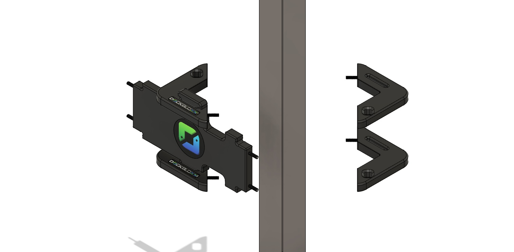
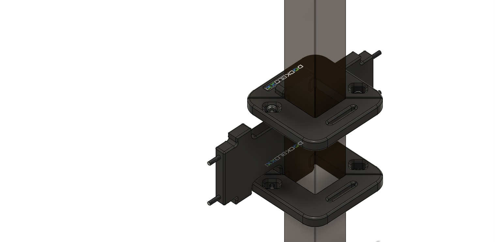
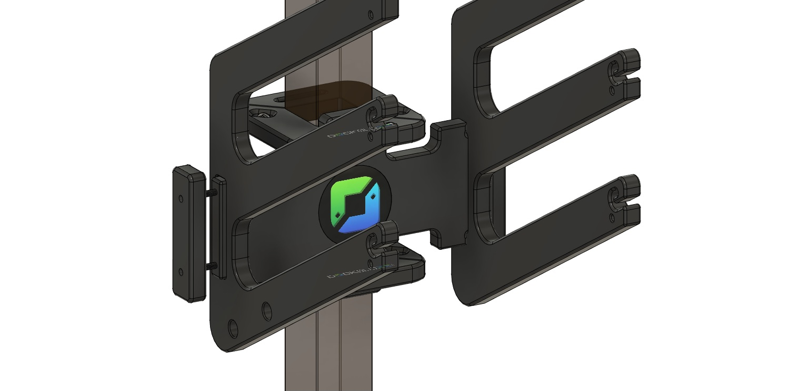
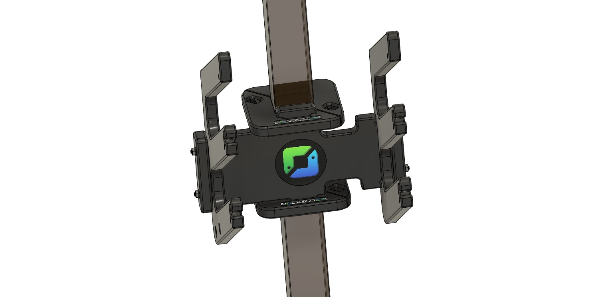

DockBloxx
CAD models, assembly animations, and new product design for a catalog of no-drill dock accessories.
- Role
- Design & Animation Intern, now freelance CAD designer
- Timeframe
- May 2025 to present
- Where
- DockBloxx, Atlanta, GA
- Tools
- Fusion 360, CNC manufacturability review
All my own work: every 3D model and animation on this page, and across this site, was modeled and animated by me.
Overview
DockBloxx makes mounting blocks that cinch tight around a dock post without drilling, giving boat owners a clean, strong place to hang everything from life jackets and paddleboards to hoses, fishing rods, and surfboards. The company's tagline sums it up: "Dock Life, Organized!"
I joined in May 2025 as the Mechanical Design and Technical Animation Intern. When the internship ended in January 2026, DockBloxx kept me on as a freelance CAD designer, and I still do their CAD and animation work. My models and assembly animations are used across the company's website.
My Role
I own the CAD for the product line: I modeled and animated the full catalog of 20+ dock accessories, used those models as CAD prototypes to check reliability and CNC manufacturability, and helped design and develop the Wake Surf Bloxx, a new modular product, from concept through finalized prototype.
What I Built
- Wake Surf Bloxx: helped design and develop this modular board rack from concept through finalized prototype. It's now sold on the DockBloxx website and holds two boards and four life jackets without drilling. I also made its assembly animation above: the two collars cinch onto the post, the mounting plate locks on, and the board cradles and side holders bolt into place.
- Catalog CAD and animation: CAD models and assembly animations for 20+ accessories, showing customers how each Bloxx goes together and clamps to a post.
- Feasibility analysis: used the CAD prototypes to check that parts would hold up in use and could be CNC machined before anything was cut.
Animation stills



